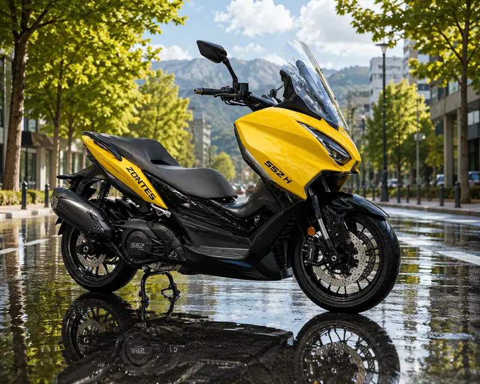

Novedades › Zontes 552H
Novedades · EICMA 2025
Zontes 552H: el maxiscooter que separa el motor del basculante
El primer bicilíndrico de Zontes ataca directamente al Yamaha TMAX. Su gran novedad no es la potencia, sino la arquitectura: motor anclado al chasis y transmisión viajando dentro del basculante.
Aclaración importante: la 552H no es una moto de marchas, sino un maxiscooter automático (CVT). Toda la gama 552 (Z, S, G y H) se presentó en EICMA 2025 (Milán, noviembre 2025) como prototipos.

La novedad técnica: motor portante y transmisión en el basculante
En un maxiscooter convencional (Burgman, Forza, la mayoría de los scooters medios), el bloque motor y la transmisión CVT forman una sola pieza que bascula junto a la rueda trasera (la llamada unidad basculante). El resultado es una gran masa no suspendida que penaliza estabilidad y respuesta.
El Yamaha TMAX ya rompió con ese esquema: monta el conjunto motor-CVT fijo al chasis y la rueda trasera va sobre un basculante de tipo moto, con la transmisión final por correa dentada. Es la referencia del "motor portante" en el segmento, y a la gama Zontes 552 se la compara directamente con ella.
Zontes sigue esa misma vía en toda la gama 552, pero la lleva un paso más allá:
- El motor va anclado fijo al chasis, actuando como elemento estructural (stressed member, el mismo concepto que usan Ducati, Moto Guzzi o las BMW bóxer). Aumenta la rigidez del conjunto.
- La transmisión CVT se integra dentro del basculante de aluminio (en su lado izquierdo), separada físicamente del bloque motor. En el TMAX la CVT queda en el chasis y solo la correa dentada viaja por el basculante; Zontes mete la propia variadora dentro del basculante.
Beneficios declarados: mayor rigidez estructural, mejor reparto de masas, menos masa no suspendida, menos vibraciones, más estabilidad y una respuesta de guiado más precisa.
El motor portante y la transmisión en el basculante es una solución compartida por los cuatro modelos de la gama 552, no exclusiva del H. Zontes la presenta como una evolución del esquema que popularizó el TMAX.
Motor
| Cilindrada | 531 cc, bicilíndrico en paralelo |
| Distribución | 4 tiempos, DOHC, 8 válvulas |
| Potencia | 38 kW (51-52 CV) a 7.250 rpm |
| Par | 56 Nm a 5.500 rpm |
| Alimentación | Inyección Bosch con acelerador ride-by-wire |
| Refrigeración | Líquida |
| Homologación | Euro5+ (pendiente de homologación en España) |
| Embrague | Centrífugo (algunas fuentes citan multidisco en baño de aceite) |
| Transmisión | CVT por correa con transmisión final por correa dentada (no cadena) |
Las cifras de "52 CV" son un redondeo de la prensa; la ficha oficial del stand de EICMA declara 38 kW. Con esa potencia, en España se requiere carnet A (supera el limite A2 de 35 kW).
Chasis y ciclo
- Chasis de aluminio: es el gran diferenciador del 552H, único de la gama (los Z/S/G usan acero).
- Horquilla invertida regulable en compresión y extensión.
- Monoamortiguador trasero regulable en precarga (doble brazo).
- Doble disco delantero con pinzas radiales de 4 pistones y freno de estacionamiento.
- ABS de doble canal declarado por Zontes.
El ABS en curva y la unidad IMU no están confirmados para la gama 552 (sí existen en la gama 703 de Zontes). Mejor no darlos por hecho.
Electrónica y equipamiento
- Electrónica Bosch: ride-by-wire, control de crucero, modos de conducción (2 mapas) y control de tracción (TCS).
- Pantalla TFT de 7" con conectividad, mirroring del móvil, presión de neumáticos y temperatura exterior.
- Joystick multifunción en la piña.
- Keyless de 3.ª generación (cierre centralizado).
- Puños y asiento calefactados, tomas USB-A y USB-C de alta potencia.
- Batería de litio, parabrisas alto ajustable (eléctrico en las versiones Z/S).
Dimensiones y peso
| Peso en orden de marcha | 178 kg (el TMAX 560 ronda los 219 kg) |
| Depósito | 14,5 litros |
| Distancia entre ejes | 1.445 mm |
| Altura de asiento | 760 mm (la más baja de la gama) |
| Ruedas | 120/70-15 delante, 160/60-15 detrás (llantas de aleación) |
| Consumo declarado | 4,3 l/100 km (≈ 337 km de autonomía) |
Lanzamiento y precio
- Presentada en EICMA 2025 (noviembre 2025) como prototipo.
- Llegada a España: prevista para finales de 2026 (con riesgo de pasar a 2027; el mercado chino va primero).
- Precio: sin PVP oficial en España. Estimaciones de terceros: entre 7.000 y 9.000 €.
Conclusión
La Zontes 552H es un golpe sobre la mesa: por primera vez un fabricante chino lanza un bicilíndrico maxiscooter con arquitectura de motor portante y transmisión integrada en el basculante, atacando directamente a Yamaha TMAX y Honda X-ADV con unos 40 kg menos de peso. La 552H destaca por su chasis de aluminio, el más ligero y bajo de la gama. Habrá que esperar a la versión de serie para confirmar si el concepto técnico se traduce en la práctica en menos vibraciones y mejor guiado.